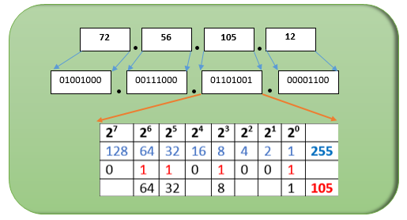

-
HTTP
DefinitionThe IP address is a set of numbers that identifies, logically and hierarchically, a device in the network (computer, laptop, smartphone) that uses the Internet Protocol or, which corresponds to the network layer of the TCP / IP model.
There are two main types of Ip addresses:
IPv4: It is composed of 32 bits, written as decimal numbers organized in four groups of 8 bits known as octets. The decimal value of each octet is in the range 0 to 255 [the highest 8-bit binary number is 11111111 and those bits, from right to left, have decimal values of 1, 2, 4, 8, 16, 32, 64 and 128, which adds up to 255]. Which can be observed more clearly in the picture below.
IPv6: It is composed of 128 bits, written as hexadecimal numbers organized in eight blocks of 16 bits each separated by colons, as we can see in the following example.
Ip address classes and examplesThere are five main classes of Ip Addresses each used for a specific purpose.
• Class A: From 10.0.0.0 to 10.255.255.255, which are generally used for large private networks, for example from a transnational company.
Example: 10.35.67.2
• Class B: From 172.16.0.0 to 172.31.255.255, which are used for medium-sized networks, such as a local company, school or university.
Example: 174.56.8.45
• Class C: From 192.168.0.0 to 192.168.255.255, which are used for smaller networks, such as home networks.
Example: 192.168.10.7
• Class D: From 224.0.0.0 to 239.255.255.255, which are used for multicasting.
Example: 240.55.55.7
• Class E: From 240.0.0.0 to 255.255.255.255, which are used for research.
Example: 250.45.17.5
-
HTTPS
IP Routing describes the process of determining the path for data to follow in order to navigate from one computer or server to another. A packet of data traverses from its source router through a web of routers across many networks until it finally reaches its destination.
When a user wants to send a piece of information to another user like a word document, a picture, or any file. This information is cut into pieces called packets. These packets are sent through the network at different times and paths by networks specialized devices known as routers. These devices are in charge to choose the best path to send the packets in terms of cost.
Once the packets arrived at their destination they are reassembled and presented to the user. At the destination, the TCP protocol controls the integrity of the data checking if every piece of information reached its destination, if not TCP request the sender to send again the missing pieces, warranting in this way that nothing is lost in the path.
- Domain names and ICANN
- IP Addresses, Packets and Routing
- DNS
- HTTP and HTTPS protocols
- W3C HTML and CSS